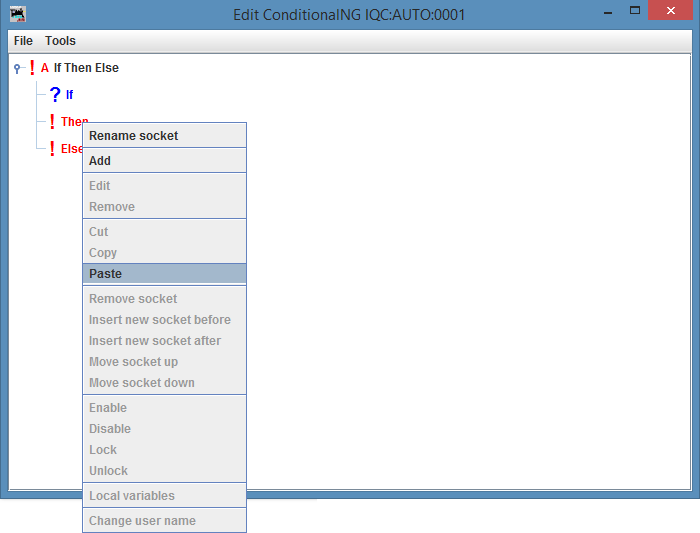

LogixNG Tutorial - Chapter 1LogixNG - What is it?LogixNG is similar to Logix. It's a way to define rules, like "If sensor IS1 is Active, then set turnout IT2 to Thrown". It borrows some concepts from Logix, but it's a complete new design and it can work side by side with Logix.
Setting up a LogixNG and a ConditionalNGFirst, we create a LogixNG. We start PanelPro and select Tools ⇒ Tables ⇒ LogixNG ⇒ LogixNG to open the table with LogixNGs.
Click button Add... to add a new LogixNG.
By default, the checkbox Automatically generate System Name is checked for all items in LogixNG. Click the button Create to create a LogixNG.
Then we create a ConditionalNG.Click button New ConditionalNG to add a new ConditionalNG.
Click the button Create to create it.
The ConditionalNG editorA ConditionalNG is a tree of actions and expressions. When the ConditionalNG is created, the tree consist only of a single female socket, "A". The exclamation mark tells that this is a digital action socket, so you can connect digital actions to it.
To create a new action, we right-click (command-click) with the mouse on the female socket
We then select which action we want to create. The actions and expressions are organized in categories, so we first select the category.
We then select the action. Lets start with a "Set turnout".
Click on "Create" to create the action.
We now get a dialog box there we can select the turnout to control. And what to do with this turnout.
In this example, we create a new turnout IT_1_1 and we tell the action to throw the turnout when the action is triggered. Click on "Create" to create this action.
The action is now created and each time this ConditionalNG is executed, the turnout IT_1_1 is thrown.
Adding a expression sensorBut having a single turnout action in the ConditionalNG will not do much good. Lets change the ConditionalNG so that it reads sensor IS_1_1 and if it's active, the turnout is thrown.To do this, we need to temporary remove the Set turnout action and instead add an IfThenElse action. LogixNG has a clipboard that allows us to cut and paste actions and expressions. So lets use it to temporary move the Set turnout action to the clipboard.
Right-click (command-click) with the mouse on the Set turnout action and then select "Cut" in the popup menu. The action is now moved to the clipboard. We will not look at the clipboard for now, but as a side note, you can open the clipboard by selecting Tools ⇒ Clipboard in the ConditionalNG editor.
We now have an empty ConditionalNG again. We now need to add an If Then Else action.
Select the category "Other".
Select the If Then Else action. And then click on "Create".
Click on "Create" to create the If Then Else action.
We now have a ConditionalNG with the If Then Else action.  Right-click (command-click) with the mouse on the Then socket and select "Paste" in the popup menu to paste the Set turnout action.
We now have the If Then Else action with the Set turnout action.
Right-click (command-click) with the mouse on the If socket and select "Add" in the popup menu to add a new expression.
Select the category "Item" and type "Get sensor". Then click on "Create".
Create new sensor IS_1_1 and select "Active". Note also the dropdown box "is" / "is not" in the middle. Then click on "Create".
We now have a ConditionalNG which will be executed every time the sensor IS_1_1 changes its state. And if IS_1_1 is changed to "Active", the turnout IT_1_1 will be thrown.
All actions and expressions in LogixNG are named beans, which means that they have system names and user names. But it's recommended to only use auto system names and no user names for actions and expressions. Therefore, system names and user names of actions and expressions are not visible by default. If you want to specify the system names and/or user names, you can turn on the setting "Show system names and user names" in the LogixNG preferences. The most important reason to not use system names and user names for actions and expressions is that it makes it much easier to copy things. Currently, when a copy is made of actions and/or expressions, the copies get auto names and no user names. It would be possible to add support for the user to specify system names and/or user names when doing a copy, but since actions and expressions build a tree, a copy can be of many actions and/or expressions at once. 1. BasicsLogixNG has four basic building blocks: Actions, Expressions, Male sockets and Female sockets.Actions do something, for example throw a turnout or sets a signal mast. Expressions ask something, for example if a sensor is active or if a signal head has a particular appearance. The actions and expressions form a tree and a complex logix can be built with them. Each action/expression is embedded in one or several male sockets. Male sockets allow actions/expressions to be connected to a female socket of the correct type. A ConditionalNG has a female socket that is the root of the ConditionalNG tree. And some actions/expressions have one or several female sockets as children. There are several different female sockets:
CategoriesTo get some kind of structure of the types of actions and expressions, LogixNG has a number of categories. Then you create a new action or expression, you first select the category and then the action/expression. Currently, the categories are:
Create an action: ActionTurnoutTo add an action or expression, right-click (command-click) with the mouse on a female socket and select Add in the popup menu. To edit an action or expression, right-click (command-click) with the mouse on that action/expression and select Edit. One thing one notices when creating an action or expression is that LogixNG is much more powerful than Logix. For now, we only use "Direct" when entering a turnout. We will look at Reference, Local variable and Formula later in this tutorial. Delayed Set Sensor/TurnoutLogix has the actions Delayed Set Sensor, Reset Delayed Set Sensor, Delayed Set Turnout and Reset Delayed Set Turnout. LogixNG has instead a generic solution, the action Execute delayed. You add the action Execute delayed, select the delay and whenever it should reset the timer or not, and then you add child actions to it, for example a ActionTurnout, ActionSensor or maybe the action Many which in turn can have several other actions.Remove the action and add the action IfThenElse.Add ExpressionSensor and ActionTurnoutLets add a new IfThenAction with a ExpressionSensor and a ActionTurnout. To do this, we need to add the action Many. We can do this by cutting the IfThenElse expression so it's moved to the clip board, then add the Many action and then paste the IfThenElse action back.Cut the IfThenElse action, add a Many action and paste the IfThenElse action.Stop the power during lunchLogix support reading the fast clock. LogixNG also supports reading the system clock. Lets assume you want to cut power to the layout during the lunch. This can easily be done by the following ConditionalNG:
* IfThenElse
* If: And
* E1: Clock: System clock between 12.00 and 13.00
* E2: Power: Is power ON?
* Then: Power: Turn power off
* Else:
|